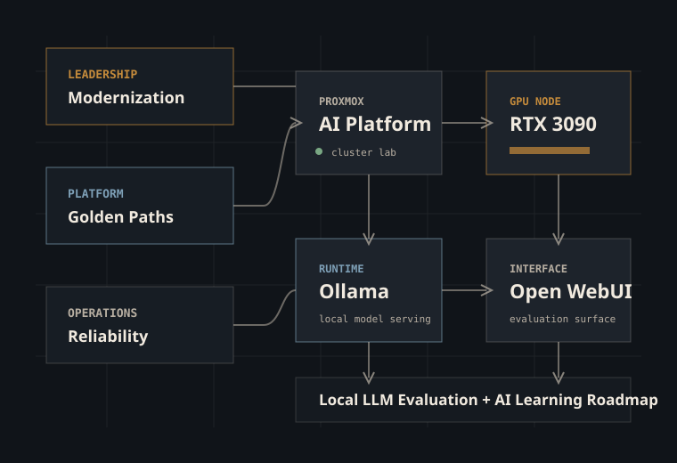
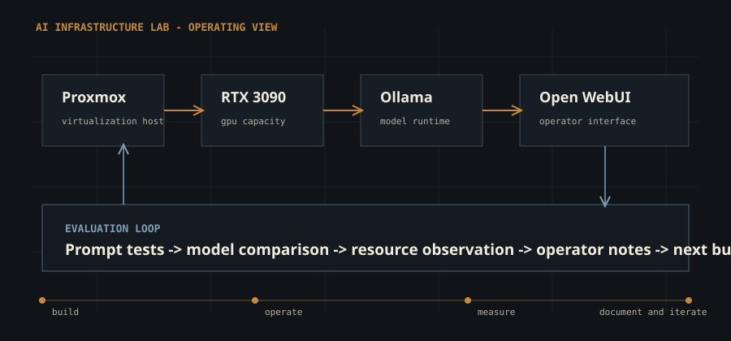
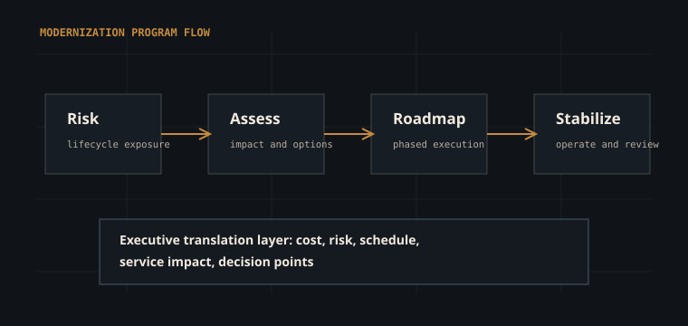
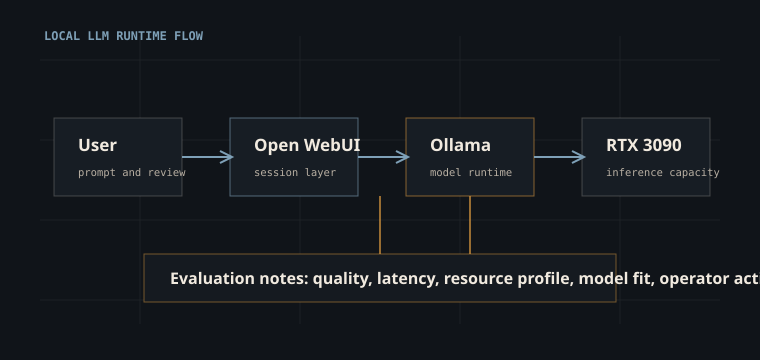

Infrastructure Operator
Built credibility by showing up for production systems, service continuity, incident work, and the unglamorous details that keep trust intact.
Operations-proven infrastructure leader building toward AI-ready platforms
Matt Smalling's portfolio is a story of steady evolution: years of infrastructure ownership, practical modernization work across mixed environments, growing platform engineering discipline, and a hands-on AI lab where the learning stays close to the hardware, the teams, and the work.

Chapter 01 - About
Matt's path starts with the work that earns trust: keeping services stable, reducing infrastructure risk, communicating clearly when things are tense, and modernizing systems without forgetting the people depending on them. The work is technical, but the point is still human.
The next chapter builds on that foundation. Platform engineering and AI infrastructure are treated here as operating models, not trends: repeatable patterns, responsible automation, practical evaluation, and a bias toward systems that can be understood, supported, and improved by real teams on real days.
As you move up the ladder, stay human. Otherwise, what is the point?
Chapter 02 - Career Evolution
Built credibility by showing up for production systems, service continuity, incident work, and the unglamorous details that keep trust intact.
Shifted from reacting to problems toward roadmaps, lifecycle risk reduction, stakeholder alignment, and phased delivery people could actually follow.
Focused on standards, paved paths, support models, automation opportunities, and the kind of patterns teams are relieved to reuse.
Using a local lab to learn GPU constraints, model-serving workflows, evaluation loops, and what breaks when the demo becomes a system.
Chapter 03 - Infrastructure Leadership
Prioritizing infrastructure improvements by business impact, risk, lifecycle urgency, and the team's actual capacity to absorb change.
Building repeatable practices for incident response, escalation, maintenance windows, and service review, because calm is usually designed ahead of time.
Turning technical risk, constraints, and options into plain decisions leaders can act on without pretending the tradeoffs disappeared.
Chapter 04 - How I Think About Infrastructure
Matt brings deep infrastructure operations experience into the platform and AI infrastructure transition: data center operations, hybrid environments, virtualization platforms, cloud environments, security, backups, recovery, and modernization work where the wrong decision shows up later as risk, cost, or lost trust.
The useful answer is not always "move it to the cloud" or "keep it local." It depends on the workload, the business, the data, the people operating it, and the consequences if it fails. VMware, Hyper-V, Proxmox, AWS, on-prem systems, cloud systems, and odd out-of-the-box environments all have a place when they solve the right problem.
Protecting corporate intellectual property matters regardless of where the workload lives. Reliability, security, cost, maintainability, compliance, and business outcomes all need a seat at the same table. Platform engineering and AI infrastructure are the next evolution of that background, not a reset button.
Start with the workload and risk profile. Then choose the environment. Not the other way around.
AI workloads should not automatically go to the cloud. Placement should depend on data sensitivity, cost, GPU availability, operational control, and business risk. The right answer may be local, cloud, or hybrid. The job is to know why.
Chapter 05 - Platform Engineering
Documented, repeatable patterns for deploying and operating services with fewer bespoke handoffs and fewer mystery rituals.
Clear ownership boundaries, support models, escalation paths, and lifecycle accountability that people can explain without a meeting about the meeting.
Targeted reduction of toil across provisioning, monitoring, reporting, and operational checks, especially the work everyone quietly knows should not be manual.
Chapter 06 - Current Initiatives
Building and documenting a local AI platform with virtualization, GPU acceleration, model runtime, and enough notes to make the next rebuild less dramatic.
Translating operations leadership into artifacts hiring teams can inspect: patterns, diagrams, case studies, and decision records written in plain English.
Comparing model behavior, resource requirements, usability, and operational fit instead of assuming the newest model is automatically the right answer.
Identifying the highest-value automation and monitoring improvements that would make the lab easier to run, explain, and hand to another human.
Chapter 07 - AI Infrastructure Lab
AI infrastructure becomes real when you have to provision it, cool it, expose it, secure it, evaluate it, explain it, and keep improving it. This lab keeps the learning honest.

The lab turns AI infrastructure from reading material into operational practice: capacity planning, model lifecycle, deployment friction, observability gaps, and user-facing reliability. It is where the neat ideas meet the noisy machine.
GPU passthrough, local model serving, prompt and model evaluation, retrieval patterns, security posture, and the practical economics of self-hosted AI tooling.
Proxmox host design, GPU allocation, storage considerations, network segmentation, and rebuild notes that future Matt will appreciate.
Ollama runtime patterns, model selection, resource observation, prompt behavior, and local serving constraints.
Open WebUI workflows, user-facing reliability, practical access patterns, and usability tradeoffs.
Repeatable tests for quality, latency, context handling, hardware utilization, and fit for real operational use, not just a nice screenshot.
Chapter 08 - Projects and Architectures
Placeholder case study for a modernization initiative focused on aging infrastructure, service continuity, stakeholder alignment, phased execution, and keeping trust intact while systems change.
Discuss approachPlaceholder case study describing how repeatable standards can reduce support variance, make handoffs less weird, and improve team confidence across common infrastructure workflows.
Discuss approachPlaceholder case study for the Proxmox, RTX 3090, Ollama, and Open WebUI stack used to evaluate local AI models, operational patterns, and what it takes to make the setup dependable.
View lab stack

Chapter 09 - Learning Journey
Production ownership, reliability practices, lifecycle planning, and business-aligned execution with people depending on the outcome.
Internal platforms, automation, golden paths, observability, and service ownership models.
GPU-enabled Proxmox workloads, Ollama model serving, Open WebUI, and local LLM evaluation.
From lab learning to production-minded patterns for governance, cost, reliability, adoption, and the human side of changing how teams work.
Contact
Replace this placeholder with preferred contact details, LinkedIn, GitHub, resume links, and a short note about the roles or conversations Matt is targeting. Good fits include teams that value reliability, curiosity, clear communication, and systems that help people do better work.